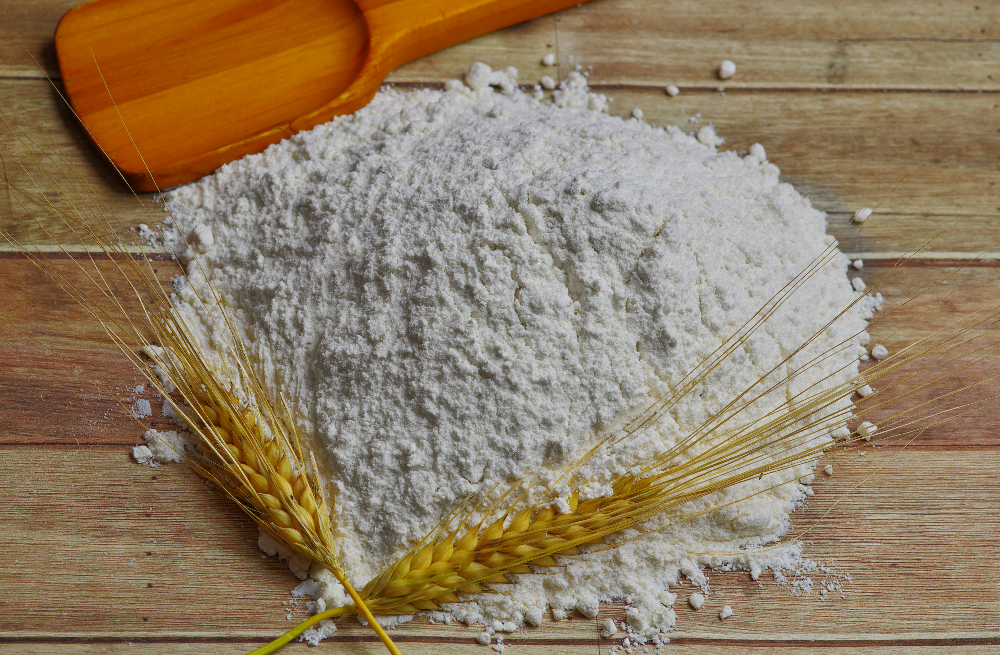
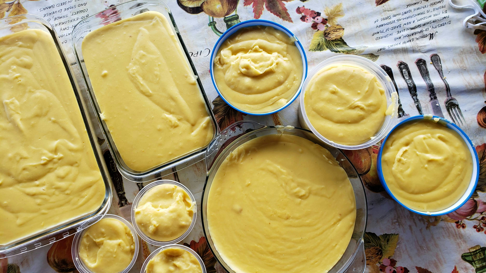
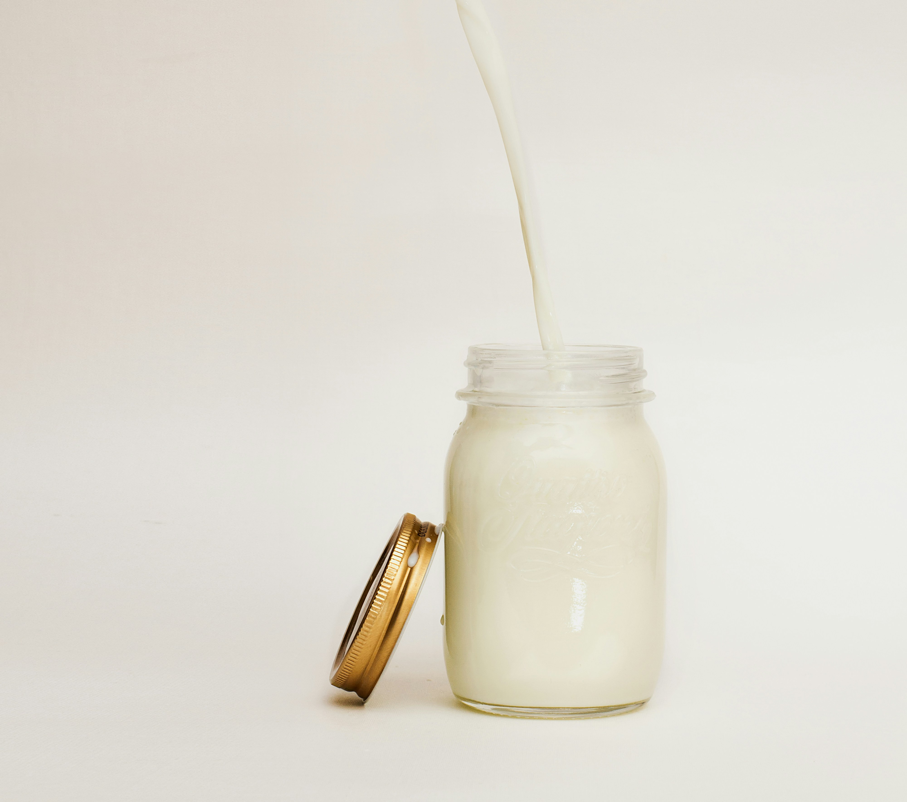
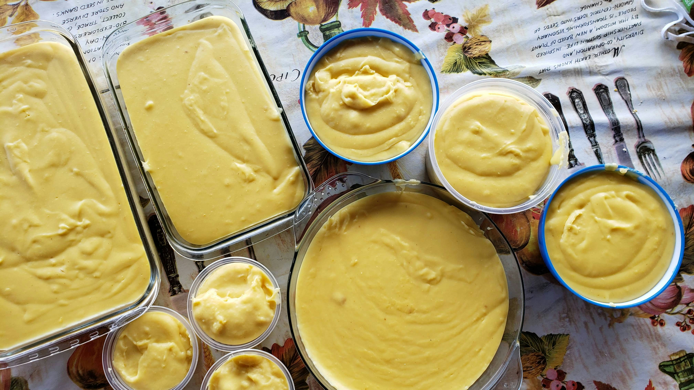
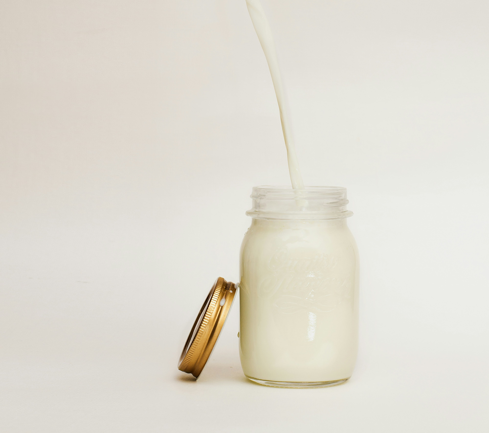
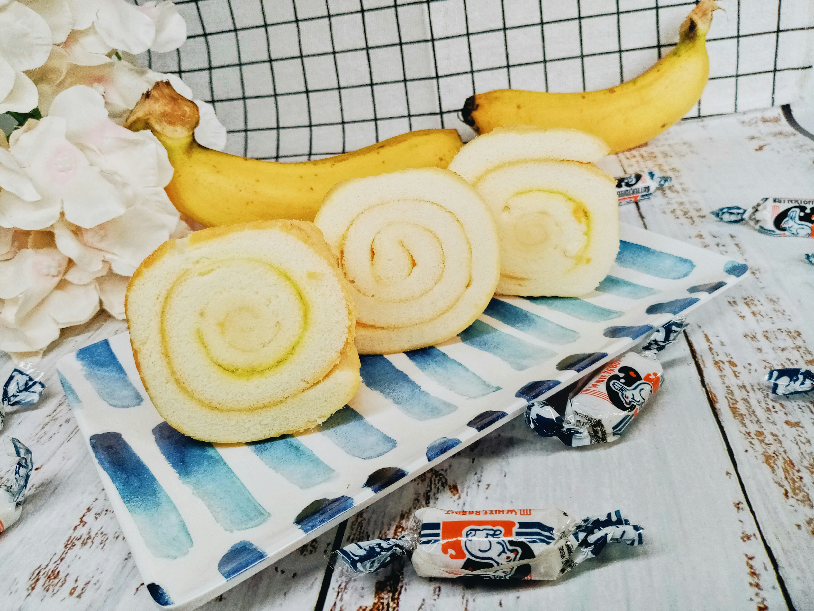

Anasayfa
Muzlu Pasta Tarifi
Malzemeler
Pandispanya için;
- 4 adet yumurta
- 1 su bardağı toz şeker
- 1 su bardağı un
- 1 paket kabartma tozu
- 1 paket vanilin
Krema için;
- 2,5 su bardağı süt
- 2 yemek kaşığı un
- 2 yemek kaşığı mısır nişastası
- 1/2 su bardağı toz şeker
- 1 paket vanilin
- 1 yemek kaşığı tereyağı
- 2 adet muz
Malzeme Görselleri

 



Yapılışı
Pandispanyayı Hazırlayın:
-
Fırını 180 dereceye (356°F) ısıtın. Yumurtaları ve şekeri derin bir
kapta köpürene kadar çırpın. Un, kabartma tozu ve vanilini ekleyip
spatula ile dikkatlice karıştırın. Karışımı yağlanmış veya yağlı kağıt
serili bir kek kalıbına dökün. Önceden ısıtılmış fırında 20-25 dakika
pişirin. Kürdan testiyle pişip pişmediğini kontrol edin. Pişen
pandispanyayı fırından çıkarıp soğumaya bırakın.
Kremayı Hazırlayın:
-
Süt, un, nişasta ve şekeri tencereye alın. Orta ateşte sürekli
karıştırarak koyulaşana kadar pişirin. Ocaktan aldıktan sonra vanilin ve
tereyağını ekleyin, karıştırarak kremayı soğumaya bırakın.
Pastayı Birleştirin:
-
Soğuyan pandispanyayı dikkatlice ortadan ikiye kesin. İlk katın üzerine
hazırladığınız kremayı eşit şekilde yayın. Muzları ince dilimleyip krema
üzerine dizin. İkinci pandispanya katını muzların üzerine yerleştirin.
Soğutun ve Servis Edin:
-
Pastayı buzdolabında en az 2 saat dinlendirin. Dilimleyerek soğuk olarak
servis edin. Afiyet olsun!
